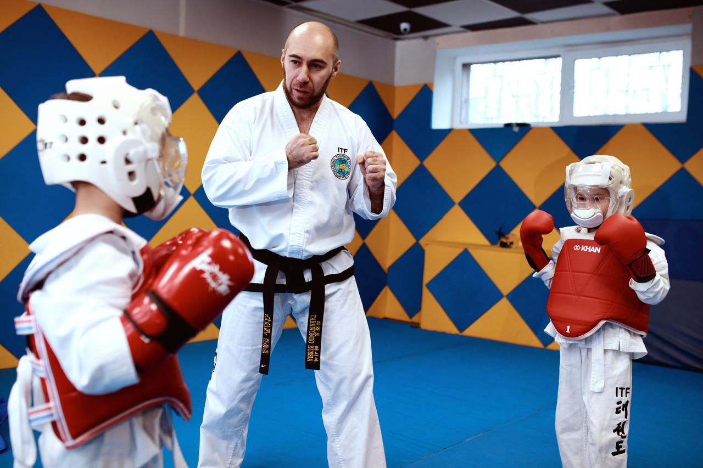

Отношения между учениками и инструктором
Даже сегодня в современной Южной Корее часто через внешний лоск двадцатого века проявляются скрытые ценности конфуцианства. Сын, который остается послушным всю свою жизнь, становится объектом поклонения после смерти родителей. Эта послушность и преданность непреходящие ценности. Из качеств, ценных по Конфуцию, корейцы усвоили чувство уважения к своим родителям. Эти отношения всегда очень важны. Старая корейская пословица гласит: "Отец и мать родители, которые вскормили меня, в то время как учитель это родитель, который научил меня". Предполагается, что ученик должен уважать своего учителя так же, как родителей. Таким образом, узы преданности и уважения по отношению к учителю и родителям и лежат в основе нации и семьи.
Хотя каждый обязан быть верным королю, король должен показывать уважение и преданность своему учителю, как Александр Македонский по отношению к Аристотелю. Хотя отец любил своего сына, он никогда не сможет быть его учителем. Взаимоотношения между отцом и сыном эмоциональны и необъективны. А без объективности почти невозможно создать систему и полностью контролировать процесс обучения. В Корее говорят: "Родители могут дать детям жизнь, по не их предназначение в жизни". Самая лучшая награда дня родителя обеспечить такое обучение, которое сделает ребенка полезным и уважаемым членом общества". Очевидно, что обязанность родителей - дать соответствующее образование, которое расширит знания ребенка и воспитает в нем или в ней чувство нравственности. Зачастую родители не всегда имеют возможности дать хорошее образование ребенку. Причина тому недостаточная твердость при воспитании дисциплины. Они подсознательно боятся, что это может привести к разрыву их отношений. Конфуций советовал: "Детьми нужно обмениваться и их должны обучать заинтересованные родители". Учить чужого ребенка, чтобы он стал человеком с хорошим характером, в соответствии с желаниями родителей, очень большая ответственность. В глазах учеников учитель занимает одинаковое положение с родителями. Древний афоризм прав в том, что король, учитель и отец равны. Во всех рассмотренных выше взаимоотношениях обязательны любовь и взаимопонимание, но должна быть и объективность. Такие взаимоотношения присутствуют и в таэквон-до Ответственность за обучение этому искусству лежит на инструкторе, задача которого научить ученика быть физически и умственно сильным и внести свой вклад в становление мира в обществе.
Конечно, преданный и искренний инструктор абсолютно необходим любой школе. Школа не может развиваться и процветать без преданных и искренних учеников. Следовательно, оба - инструктор и ученик несут ответственность за обучение друг друга. Инструкторами и учениками должны соблюдаться следующие положения: ученики, инструктор.